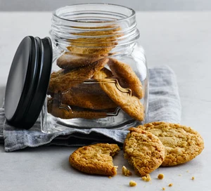

Return to Home Page
Peanut Butter Cookies

Image source: BBC Good Food
Description
A tasty, quick recipe to make gluten-free peanut butter cookies that only requires four ingredients. It's straightforward enough that
children can help with making them for extra fun!
Ingredients
- 200g peanut butter (crunchy or smooth)
- 175g golden caster sugar
- 1 large egg
- 1/4 tsp fine table salt
Steps
- Heat your oven to 180C/160C fan/gas 4.
- Grease 2 large baking trays and line them with baking parchment.
- Measure the peanut butter and sugar into a bowl, then add the table salt and thoroughly mix them together.
- Add the large egg and continue mixing until the mixture creates a dough.
-
Take chunks from the dough (roughly the size of cherry tomatoes) and put them onto the trays with adequate spacing,
squashing them down with a fork.
- From this point, you can choose to put the cookies in a freezer for 2 months and when you're ready to bake them,
add an extra minute or two to the cooking time mentioned in the next step.
-
Bake the cookies for 12 mins until they're golden around the edges and their centres are pale. Leave them on the tray
to cool for 10 mins, then place the cookies on a wire rack until they are completely cooled.
- Store the cookies inside a jar for up to 3 days.
Recipe source: BBC Good Food